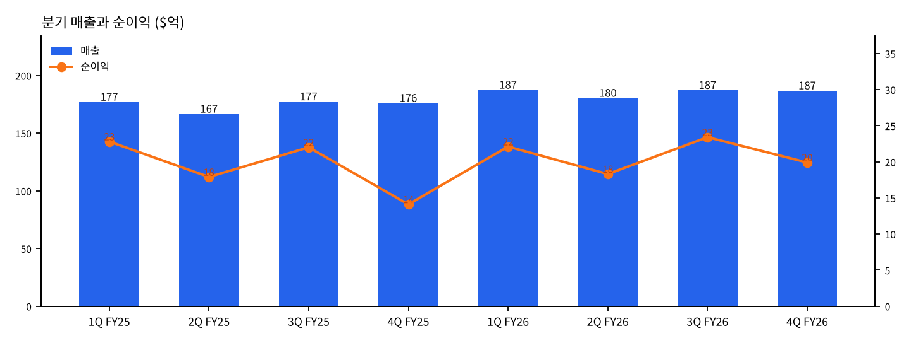
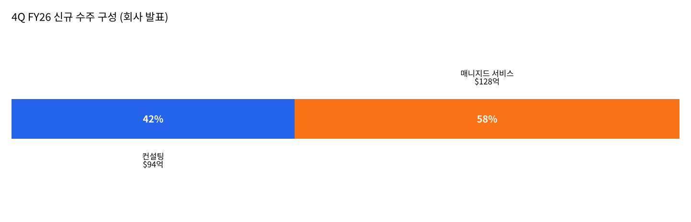
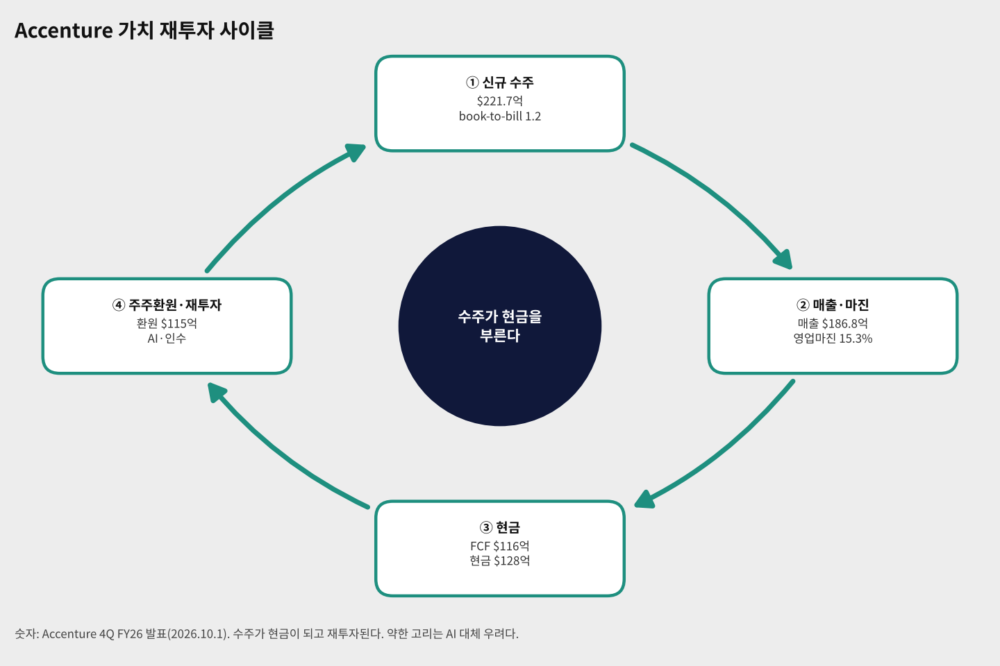

Accenture는 기업의 IT 전환과 운영을 컨설팅·위탁 서비스로 맡아 사람과 프로젝트 단위로 돈을 번다. 수주가 매출의 선행지표다.
| 항목 | 내용 |
|---|---|
| 종목 | Accenture (ACN) · NYSE · 소프트웨어·IT 서비스 · 아일랜드 더블린 |
| 최근 분기(4Q FY26) | 매출 $186.8억, 신규 수주 $221.7억 |
| 핵심 사업 | 컨설팅, 매니지드 서비스 |
| 직원 수 | 약 814,000명(트레이딩뷰) |
| 멀티플 | PER·PEG·P/S는 08~10 항목 표 참조 |
| 직책 | 인물 | 역할·특징 |
|---|---|---|
| 회장·CEO | 줄리 스위트(Julie Sweet) | CEO |
| CFO | (확인 필요) | 회사 공개 자료 기준 확인 필요 |
경영 스타일: 사람과 플랫폼 투자. 수주를 늘리고 AI 기반 서비스를 내놓는 방식이다.
AI 대체 우려에도 수주를 늘려 AI가 서비스를 키운다는 입장이다.
FY27 매출 성장을 현지통화 +3~6%로 제시했다.
다음 실적발표는 세 가지 질문에 답하는 자리다.
1. 신규 수주가 book-to-bill 1.0 이상을 유지하나?
2. AI 대체 우려가 실적에 보이나?
3. FY27 가이던스 +3~6%를 지키나?
한 줄 판정 규칙: 첫 질문(수주 book-to-bill)이 유지되면 약한 고리(AI 대체 우려)가 가려진다.
일정: FQ1 FY27 실적은 2026.12.17 발표 예정이다.
| 분기 | 매출 | 순이익 | EPS | 조정 EPS | 특이 사항 |
|---|---|---|---|---|---|
| 1Q FY25 | $176.9억 | $22.8억 | 3.59 | 3.60 | |
| 2Q FY25 | $166.6억 | $17.9억 | 2.82 | 2.82 | |
| 3Q FY25 | $177.3억 | $22.0억 | 3.49 | 3.49 | |
| 4Q FY25 | $176.0억 | $14.1억 | 2.25 | 3.03 | |
| 1Q FY26 | $187.4억 | $22.1억 | 3.54 | 3.94 | |
| 2Q FY26 | $180.4억 | $18.3억 | 2.93 | 2.93 | |
| 3Q FY26 | $187.2억 | $23.4억 | 3.80 | 3.80 | |
| 4Q FY26 | $186.8억 | $19.9억 | 3.29 | 3.30 | FY26 매출 $742억, 신규 수주 $221.7억 |
Accenture 회계연도는 9월에 시작한다(4Q FY26은 2026.8.31 종료, 10.1 발표). FQ1 FY27은 2026.12.17 발표 예정이다. 매출은 트레이딩뷰 스캐너의 분기 총매출이라 회사가 발표한 순매출과 다를 수 있다. 매출·순이익·EPS(GAAP 희석)는 트레이딩뷰 스캐너, 조정 EPS는 트레이딩뷰 실적 페이지의 Reported 값이다. 분기 정렬은 오래된 분기→최신이다.

흐름 요약: 최근 분기 매출은 $186.8억로 전년 동기 $176.0억 대비 +6.1%, 순이익은 $19.9억(전년 $14.1억)다. 최근 4분기 GAAP EPS는 $13.56, 조정 EPS는 $13.97다.
| 항목 | 내용 | 4Q FY26 신규 수주 | 비고 |
|---|---|---|---|
| 컨설팅 | 전략·변환 프로젝트 | $94.0억 | |
| 매니지드 서비스 | 운영 위탁 | $127.7억 |

매출 구성이 아니라 신규 수주 구성이다. 매니지드 서비스가 더 크다.
Accenture는 기업이 기술로 사업을 바꾸도록 돕는 것을 목표로 한다.
| 축 | 내용 |
|---|---|
| 수주 | FY26 $845억 |
| 현금 | FCF $116억 |
| 환원 | $115억 |

| 이동평균 | 값 | 종가 대비 | 위치 |
|---|---|---|---|
| 5일선 | $242.98 | -6.4% | 종가 아래 |
| 20일선 | $251.31 | -9.5% | 종가 아래 |
| 50일선 | $220.15 | +3.3% | 종가 위 |
| 100일선 | $191.94 | +18.5% | 종가 위 |
| 200일선 | $190.05 | +19.7% | 종가 위 |
52주 고가 $291.09(2026-01-14)·저가 $118.15(2026-06-22) 범위에서 종가 $227.49는 50일선, 100일선, 200일선을 웃돌고 5일선, 20일선은 밑돈다.
| 규칙 | 기준 | 현재 값 | 신호 |
|---|---|---|---|
| 장기 추세 필터 | 종가 vs 200일선 | $227.49 > $190.05 | 매수 |
| 중장기 교차 | 50일선 vs 200일선 | $220.15 > $190.05 | 매수 |
| 단기 교차 | 20일선 vs 50일선 | $251.31 > $220.15 | 매수 |
| 돈키언 채널 | 55일 고가 $271.76 / 저가 $172.11 | 중간값 $221.94 위 | 매수 |
| 1개월 모멘텀 | 21거래일 수익률 | -4.9% (기준 $239.12) | 매도 |
| 3개월 모멘텀 | 63거래일 수익률 | +25.4% (기준 $181.35) | 매수 |
| 6개월 모멘텀 | 126거래일 수익률 | +26.9% (기준 $179.22) | 매수 |
| 12개월 모멘텀 | 252거래일 수익률 | -5.7% (기준 $241.33) | 매도 |
| 종합 (8개 평균) | +0.50 | 매수 |
해석: 매수 신호 6개(장기 추세 필터, 중장기 교차, 단기 교차, 돈키언 채널, 3개월 모멘텀, 6개월 모멘텀), 매도 신호 2개(1개월 모멘텀, 12개월 모멘텀). CTA 점수 +0.50(매수). 14일 ATR $9.68 (4.3%), 52주 고가 $291.09 · 저가 $118.15.
| 가격 | 기준 | 무엇이 바뀌나 |
|---|---|---|
| $271.76 | 55일 고가 | 돌파 시 채널 상단 갱신 |
| $241.33 | 12개월 모멘텀 기준가 | 종가가 이 가격 위면 12개월 신호 매수 |
| $239.12 | 1개월 모멘텀 기준가 | 종가가 이 가격 위면 1개월 신호 매수 |
| $221.94 | 돈키언 중간값 | 55일 채널 중간값 위/아래로 신호가 바뀜 |
| $190.05 | 200일선 | 종가가 이 선 위/아래인지로 장기 추세 신호가 바뀜 |
| $181.35 | 3개월 모멘텀 기준가 | 종가가 이 가격 위면 3개월 신호 매수 |
| $179.22 | 6개월 모멘텀 기준가 | 종가가 이 가격 위면 6개월 신호 매수 |
| $172.11 | 55일 저가 | 이탈 시 채널 하단 갱신 |
가격 수준은 신호가 바뀌는 기준선일 뿐 진입·청산 가격 제안이 아니다. 20일/50일 교차는 이동평균 자체가 움직여 단일 가격으로 표시하지 않았다. 일봉·주봉은 종가 기준 직접 계산(고저 데이터 미사용)이다.
| 악재 요인 | 내용 | 강도 |
|---|---|---|
| AI 대체 우려 | 올해 주가 하락의 핵심 요인 | 높음 |
| 성장 둔화 | FY27 가이던스 +3~6% | 중간 |
| 컨설팅 약세 | 컨설팅 수주 $94.0억 | 참고 |
| 티커 | 회사 | PER(TTM) | PEG | P/S | EPS 성장(YoY) |
|---|---|---|---|---|---|
| ACN | Accenture | 16.3배 | 2.05 | 1.81배 | +8% |
| IT | Gartner | 12.8배 | 0.57 | 1.82배 | +23% |
| EPAM | EPAM Systems | 19.3배 | 0.87 | 1.40배 | +22% |
| CTSH | Cognizant | 10.6배 | 0.40 | 1.23배 | +27% |
| IBM | IBM | 19.5배 | 0.49 | 3.15배 | +40% |
비교 결론: Accenture의 PER 16.3배는 Gartner·Cognizant보다 높고 EPAM·IBM보다 낮다. PEG 2.05는 네 곳 모두보다 높다.
현금·부채는 트레이딩뷰 스캐너 값이다. 현금 $128억(회사 발표).
| 지표 | 값 | 출처 | 해석 |
|---|---|---|---|
| 현금·단기투자 | $128억 | 트레이딩뷰 스캐너(최근 분기) | |
| 총부채 | $134억 | 트레이딩뷰 스캐너(최근 분기) | |
| 순부채(부채−현금) | $6억 | 내 계산 | 현금 대비 부채 부담 |
| 잉여현금흐름(TTM) | $116억 | 트레이딩뷰 스캐너 | |
| TTM 매출 | $742억 | 트레이딩뷰 스캐너 |
| 기준 | 매출 | P/S | 비고 |
|---|---|---|---|
| 내 계산(종가 ÷ 최근 4분기 매출 합계) | $741.8억 | 1.81배 | 시총은 정렬용 데이터에서만 사용 |
| 동종(트레이딩뷰) | – | IT 1.82배 · EPAM 1.40배 · CTSH 1.23배 · IBM 3.15배 | 11.19 |
해석: FCF $116억이 환원과 인수 재원이다(내 해석).
EBITDA는 영업활동의 현금 창출력을 보는 지표이고, PEG는 PER을 EPS 성장률로 나눈 값이다. EBITDA·FCF는 트레이딩뷰 TTM 값이다.
| 지표 | 값 | 산출 |
|---|---|---|
| EBITDA(TTM) | $130억 | 트레이딩뷰 스캐너 |
| EBITDA 마진 | 17.5% | EBITDA ÷ TTM 매출(내 계산) |
| FCF 마진 | 15.6% | FCF ÷ TTM 매출(내 계산) |
| PER(GAAP TTM) | 16.8배 | $227.49 ÷ $13.56 |
| PER(조정 TTM) | 16.3배 | $227.49 ÷ $13.97 |
| 방식 | PER | EPS 성장률 | PEG | 판정 |
|---|---|---|---|---|
| 조정 EPS (TTM $13.97) | 16.3배 | +8% ($12.94 → $13.97) | 2.05 | 기준 초과 |
| GAAP EPS (TTM $13.56) | 16.8배 | +12% ($12.15 → $13.56) | 1.45 | 기준 초과 |
판정: 조정 EPS 기준 PEG 2.05 → 1.0 초과 PEG 기준은 1.0 이하 투자 적격, 0.5 이하 적극 매수다. EPS 성장률은 최근 4분기 EPS 합계를 직전 4분기 합계와 비교한 값(내 계산)이고, 일회성 항목이 있으면 조정 EPS 행을 함께 본다.

Accenture의 사이클: 수주가 매출과 현금이 되고 그 돈이 AI 서비스·인수·환원으로 재투자돼 다음 수주를 부른다.
| 고리 | 현재 숫자·근거 |
|---|---|
| ① 신규 수주 | 4Q 신규 수주 $221.7억 · book-to-bill 1.2 |
| ② 매출·마진 | 매출 $186.8억(+6%) · GAAP 영업마진 15.3% |
| ③ 현금 | FY26 FCF $116억 · 현금 $128억 |
| ④ 주주환원·재투자 | FY26 주주환원 $115억(자사주 $75억·배당 $40억) |
사이클의 특징: 약한 고리는 AI 대체 우려다. "(내 해석)"은 보고서 수치가 아닌 해석이다.